×
It's Not in Your Head: The History and Science of Gender Fluidity
Laura McGuire
July 2018
At some point in your early childhood, a well-meaning parent or teacher probably sat you down and shared what they believed to be the simple facts of life—that the world was made of boys and girls. Boys have penises and girls have vaginas, they said, and they made you think it was really that simple. We see the same sentiment reiterated in political debates over “bathroom bills” and job protection acts being contested in state and local governments across the country. Certain politicians and concerned citizens are genuinely confused to hear LGBTQ advocates and allies inform them that both gender and sex are more nuanced than they know.
Sadly, to this day, one of the most commonly Googled questions cis/hetero people ask about the trans community is: “Is being trans a mental illness or a reaction to trauma?” For folks coming to terms with their identity and trying to break free from the confines that previously held them back, this misconception can be deeply disheartening and cruel. The best way to combat ignorance and myths about gender is with education and information. Here are some main points to put gender fluidity and trans identity in context.
Even the APA Knows Better
Gender identity issues have been studied in the Western World since the mid-1800s. In the 1950s, the first gender confirmation surgeries and medical interventions were performed on a select few individuals, and awareness from the psychological community increased. It wasn’t until 1980 that the Diagnostic and Statistical Manual of Mental Disorders (DSM) put a label on gender identity incongruence in patients. They listed it as “Gender Identity Disorder” and added subcategories to this diagnosis. This lead many in the general public to believe that being transgender was a problematic and deviant behavior, a misconception still currently being propagated by many politicians. The latest DSM categorizes a range of gender identity and presentation experiences under the title of “Gender Dysphoria,” dysphoria meaning a state of unease or dissatisfaction. This transition illustrates the psychiatric community’s evolution in its understanding of gender identity issues not as illness, but as states of anguish for those unable to identify and present as their true gender.
o understand what this all means, we need to dig deeper into the historical and cultural factors that play into this debate. To begin with, we must understand that the terms “sex” and “gender” are not interchangeable, nor are they the same. Sex is a biological characteristic based on chromosomal factors and sex characteristics such as genitals. Gender is a social construct and refers to how an individual navigates the world through identity (pronouns, names, etc.), how we dress and our mannerisms (feminine, masculine), and how we see ourselves. Often, these two get mixed up, resulting in the misconception that our body parts decide our gender.
Chromosomes Don’t Like Binaries
Some folks (heterosexual and LGB) continue to argue that there shouldn’t be a difference between a person’s sex and gender—that, in fact, they must be one and the same. The problem with this argument is twofold. 1. There are dozens of variations in chromosomes. 2. The idea of only two genders is a modern-day creation. While it is most common for people to be born with either an XX pair of chromosomes (female) or XY (male), it has been well-documented that many other clear variations (XXX, XXY, XYY, XXYY) and slighter variations of the X and Y combinations are more common than many people understand. What this means is, even if sex decided our gender, there are far more than two sexes.
The Gender Binary is a Modern Creation
From a cultural and historical perspective, the gender binary is a relatively new concept. However, because of Judeo-Christian colonization, there are theories that this binary has existed since the dawn of time. When missionaries landed around the globe and saw that a majority of indigenous cultures had three or more genders, they sought to extinguish these beliefs and practices. Now, more indigenous activists are speaking up and reclaiming the terms once used for their gender fluid tribal members, also known as two-spirit people. The term “two-spirit” refers to the belief that LGBTQ people have two spirits living inside them, an experience that allows them to view the world holistically and to be closer to the divine. The Navajo call them nádleehí. In Siberia, the Chukchi are tribal shaman whose third gender identity designates them as spiritual leaders within their community. In the Maori cultures of New Zealand, they are the wakawahine. In the Democratic Republic of the Congo, they are called the bangala and are said to possess unique abilities to solve crimes, as they see the world from multiple angles. We see historical evidence of third gendrs and gender fluid people on every continent were not only tolerated, but celebrated.
Beyond the biological, cultural, and historical facts that gender is a spectrum, there are also benefits to embracing gender fluidity. Numerous studies have shown how strict gender roles can become toxic—from male entitlement over female bodies, unequal pay, physical stress stemming from unevenly distributed household labor, to the disbelief of male victims of sexual assault, the problems are seemingly endless. The modern Western idea that gender has to fit into constricting and separate boxes benefits few and harms many. Some fear this means LGBTQ advocates are pushing for a world where no one can have a gender identity and everyone is forced to be androgynous. This is simply not true. LGBTQ activists are simply advocating for personal and societal freedom and growth, which has the potential to benefit everyone.
When a person comes out as transgender, gender fluid, or genderqueer, they are following in a lineage that was and is sacred in many societies around the world. Because of biological and cross-cultural increased awareness, more and more people feel free to live openly and to stand up for their rights as people whose identity is both mentally sound and authentic. There has not suddenly been an increase in transgender folks, either—simply an increase in people who feel safe being themselves. The more we, as societies and communities, come to understand this idea, the safer—both physically and emotionally—the world can be for our trans siblings and people of all gender identities and expressions.
×
Gender Fluidity Finally Enters the Mainsream
Allison S. Cohn
March 2021
Harris Reed—who stands six feet nine in five-inch platform boots—dreams big. The 24-year-old designer, who identifies as gender-fluid, outfitted Harry Styles with a world tour’s worth of lamé pussy-bow blouses and worked on Gucci’s design team, all while he was a student at the London art and design school Central Saint Martins. When the pandemic canceled the graduate showcase this past May, he found a way to reach an even bigger audience by creating a giant disc hat filter on Instagram, “worn” by Kaia Gerber, Jeremy O. Harris, Kiernan Shipka, and more than a million other fans. “I’d like to eradicate the categories of menswear and womenswear,” Reed says. “Fluidity offers an alternate way of being, crossing and merging masculine and feminine.”
Reed’s design philosophy takes further ideas about gender that are just starting to show up on the runways. Models identifying as non-binary, trans men, and cis men walked alongside cis women at Valentino’s Fall 2020 womenswear show. Agender model Juno Mitchell walked that show too, as well as for Eckhaus Latta, Marni, Coperni, Alexander McQueen, and Marc Jacobs, where they strode side by side with Miley Cyrus—who has described herself as gender-neutral—adding to the feeling that gendered clothing is increasingly irrelevant. “It’s just so not that period in time anymore,” says Marc Jacobs. “And for me, it hasn’t really been ever.” In September, Jacobs introduced Heaven, a new range billed as being for “girls who are boys and boys who are girls, [and] those who are neither.” Around the same time, Alessandro Michele launched Gucci MX, a new way to shop on Gucci.com, where pieces from his womenswear and menswear shows are merchandised together. “We are witnessing a ‘gender shift,’ ” says Stefano Pilati, creative director of Yves Saint Laurent from 2004 to 2012, explaining the origins of Random Identities, his Berlin-based louche glamour-meets-haberdashery line. “I therefore design fashion at the service of it.”
More than half of Gen Z customers shop from both menswear and womenswear offerings, according to a recent survey by the New York–based brand consultancy Wunderman Thompson. While it’s true that fashion has a long history of subverting gender norms—think of Coco Chanel’s wide-legged trousers, Yves Saint Laurent’s le smoking, and Jean Paul Gaultier’s men’s skirting—by and large these designs have been created by people, and for people, who identify as cisgender. Until recently the industry had been slow to adapt to and embrace a more expansive definition of gender itself and a consumer who identifies across a gender spectrum. What sets young creatives like Reed and his contemporaries apart, then, is that they are designing for their own non-cisgender bodies and celebrating the communities that power their brands by putting them front and center.
Pierre Davis, the 30-year-old cofounder and head designer of the L.A.-based collective No Sesso (Italian for “no gender”) creates conceptual pieces such as skirts made from suit jackets that showcase fluid possibility. Last year, Davis became the first trans woman to present a collection on the official New York Fashion Week calendar. “No Sesso started as just us making things that we see ourselves wearing, and our community really related to that,” says Davis. “It’s important that we continue to show our clothes on Black trans, queer, and non-binary people.”
Art School’s 26-year-old non-binary creative director, Eden Loweth, made a brilliantly simple technical innovation: using a bias cut in tailoring. “As a trans person goes through hormone treatments, it changes the way that fabric sits on their body,” says Loweth, explaining the utility of a construction technique normally used to give silk dresses stretch. The London-based label’s blazers have also found fans in unlikely corners—cue the amputee mountain climber and local U.K. politician who walked with young trans and non-binary creatives in the most recent show. “You don’t need to be trans to understand what it’s like for your body to change shape over time,” Loweth adds.
Loweth’s work has also won over MatchesFashion, which welcomed Art School and Harris Reed to its Innovators incubator program this fall. “We spend a long time searching for a diverse curation of design talent that will appeal to our global customers across genders,” says Natalie Kingham, fashion and buying director at MatchesFashion. Working with the luxury retailer gave Reed unexpected insight into his base. “I have guys, I have women, I have transgender people,” he says. “I have 50-year-olds in New York and 14-year-olds in Dubai. It could not be more all over the place, in the best way possible.” Next on his agenda for making the world more beautiful and inclusive is reimagining bridal. “My message is self-expression and just owning who you are in the biggest, most maximal way possible,” says Reed. “I think the potential reach for gender-fluid fashion really is everyone.”
 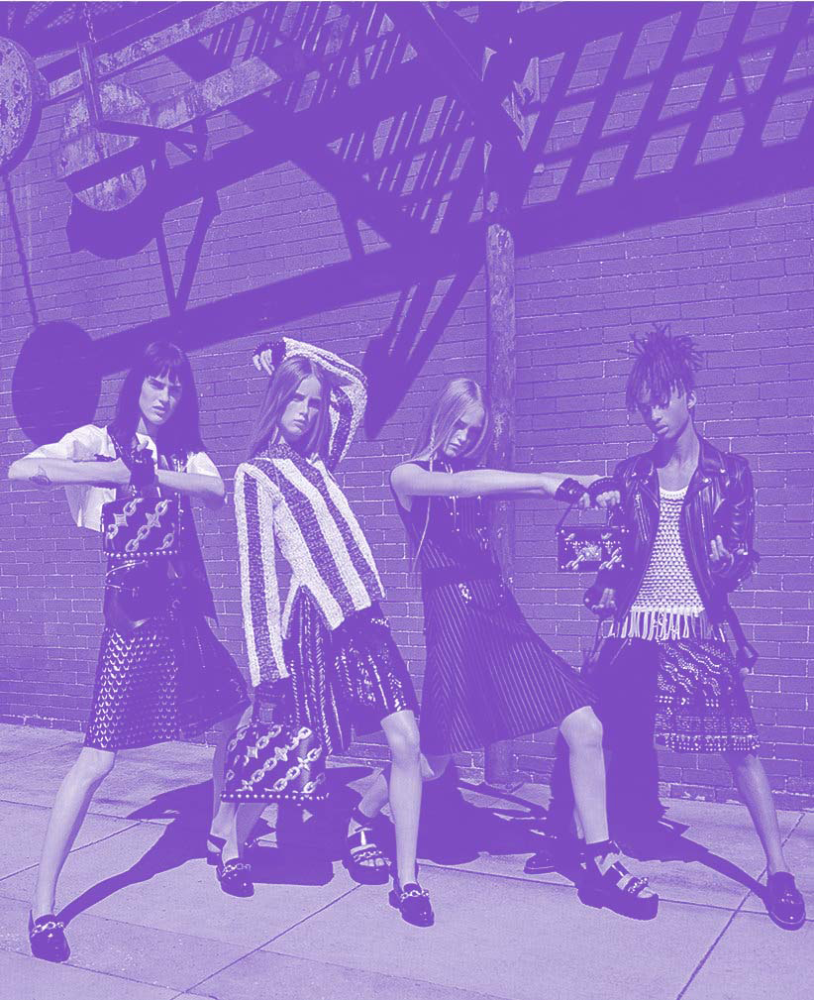
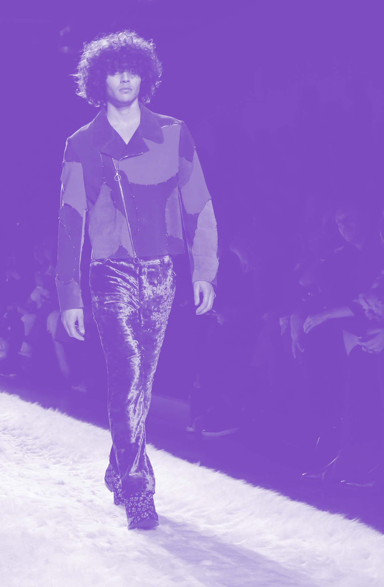
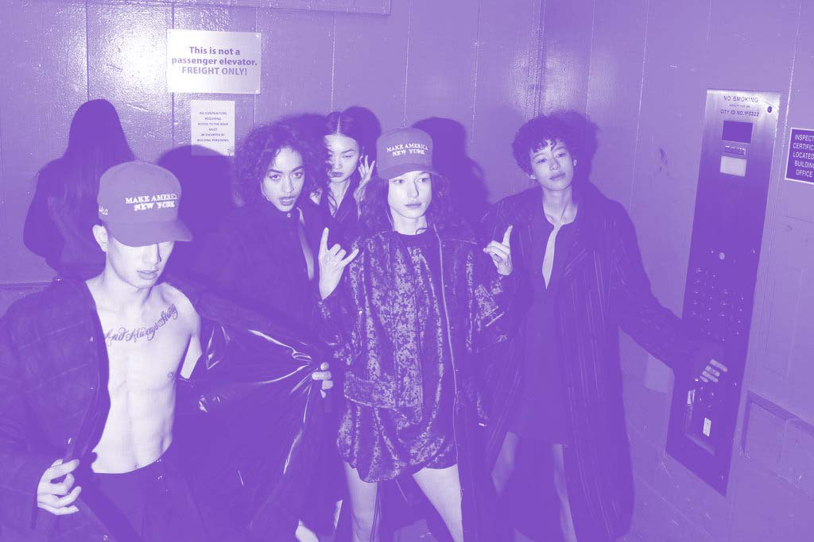
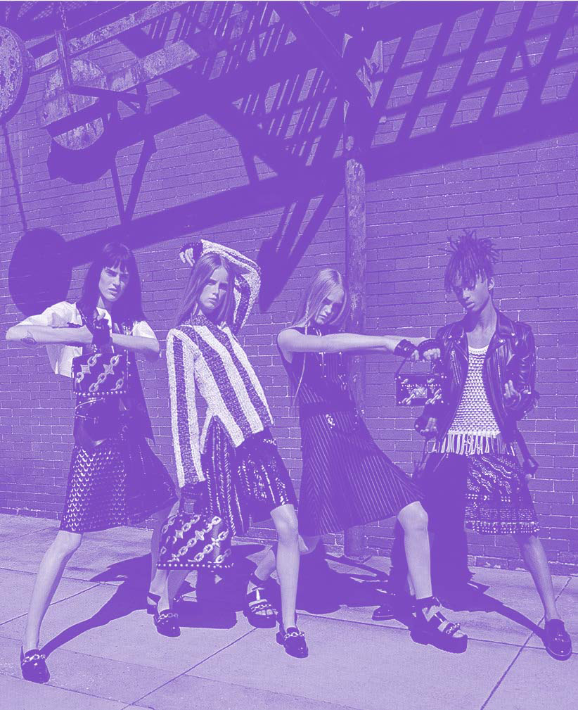
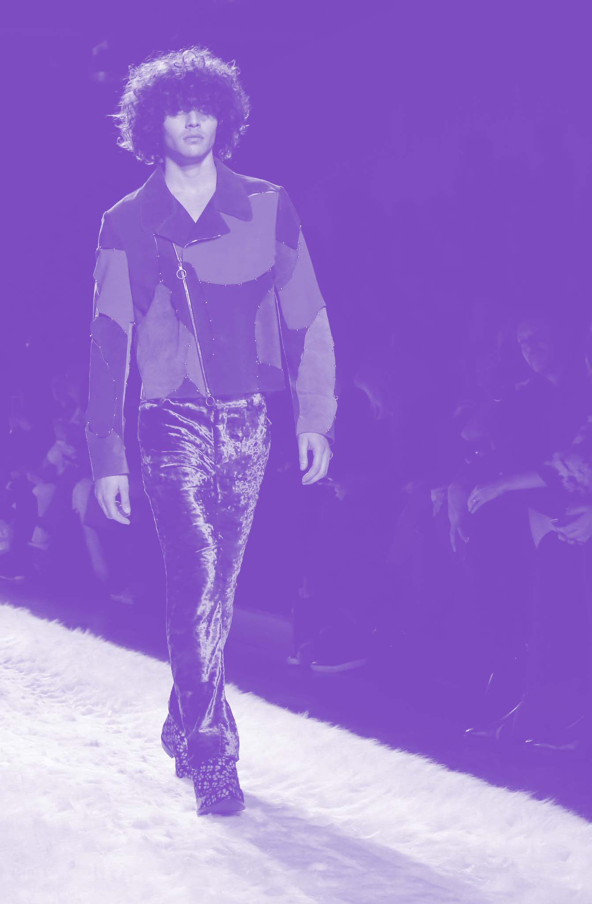
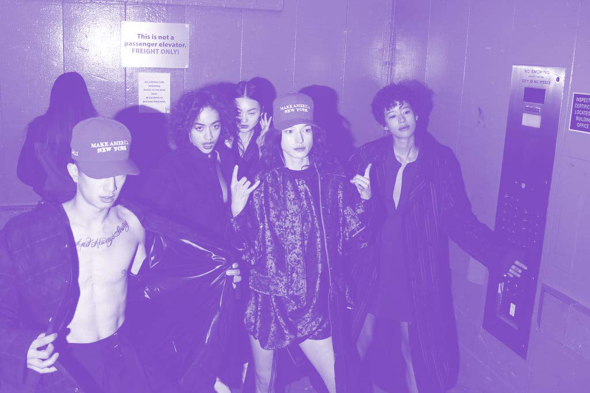

 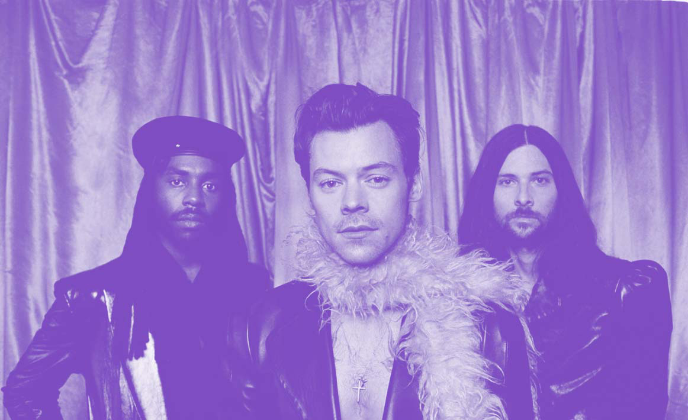
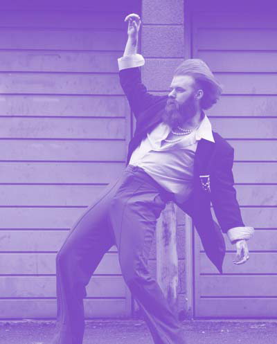
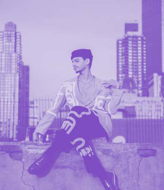
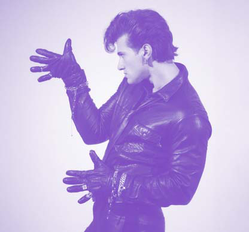
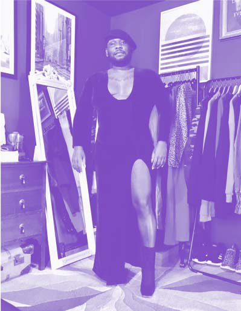
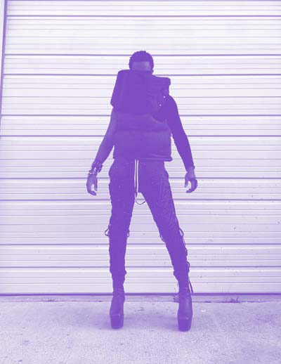
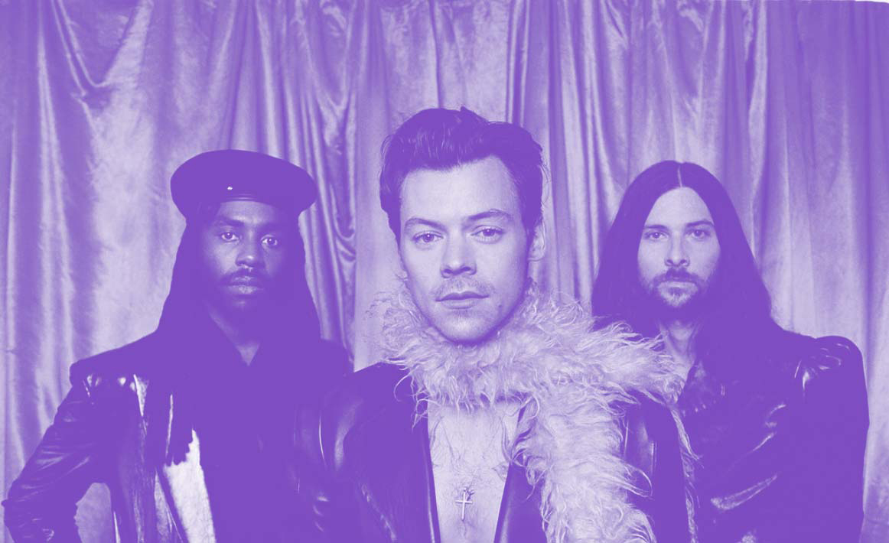
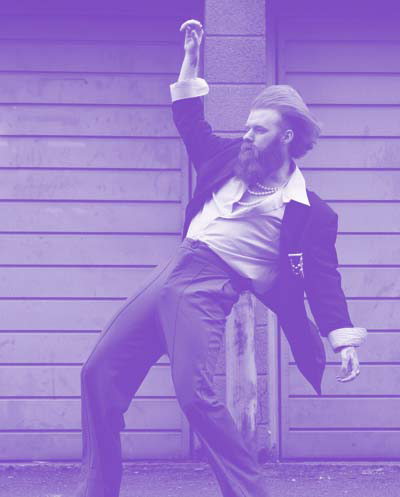
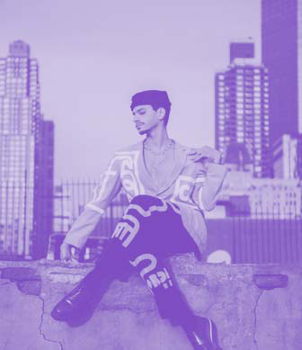
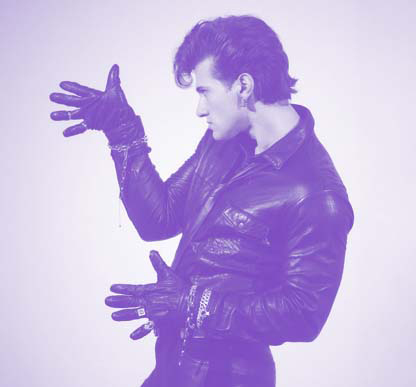
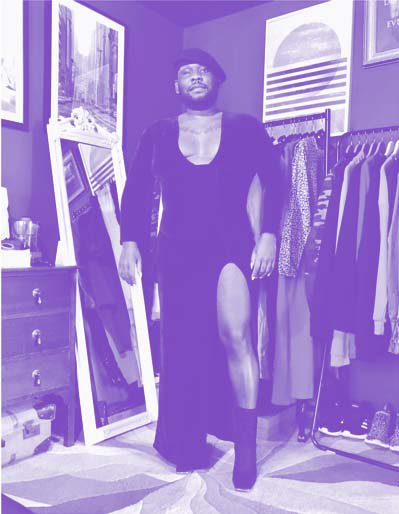
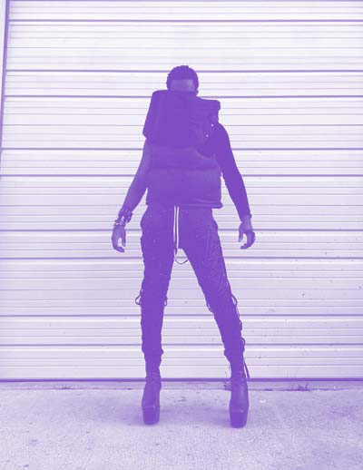